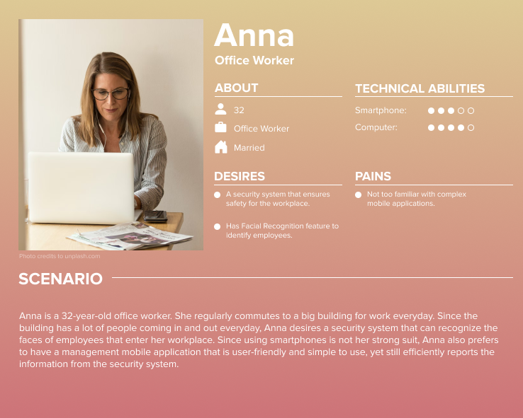
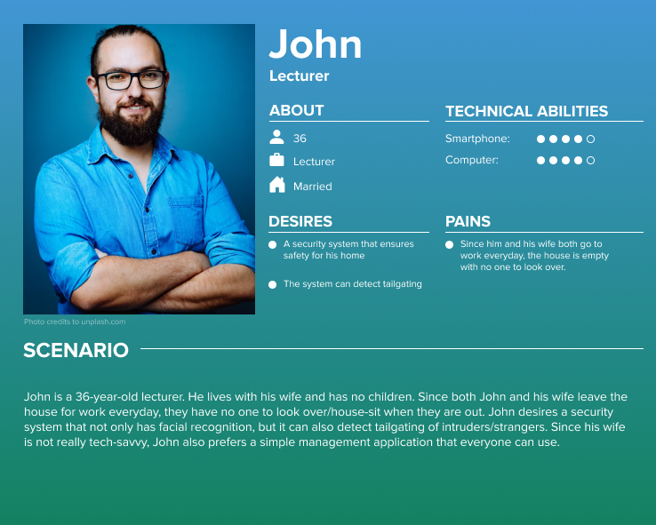
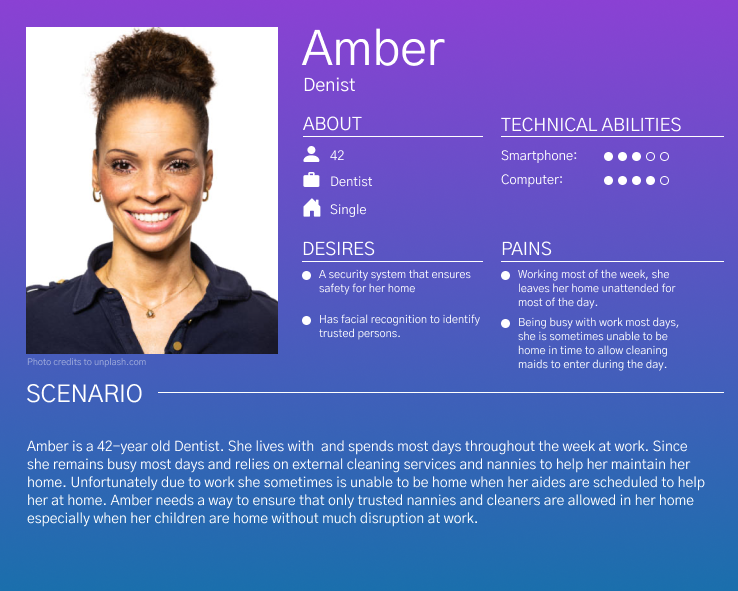
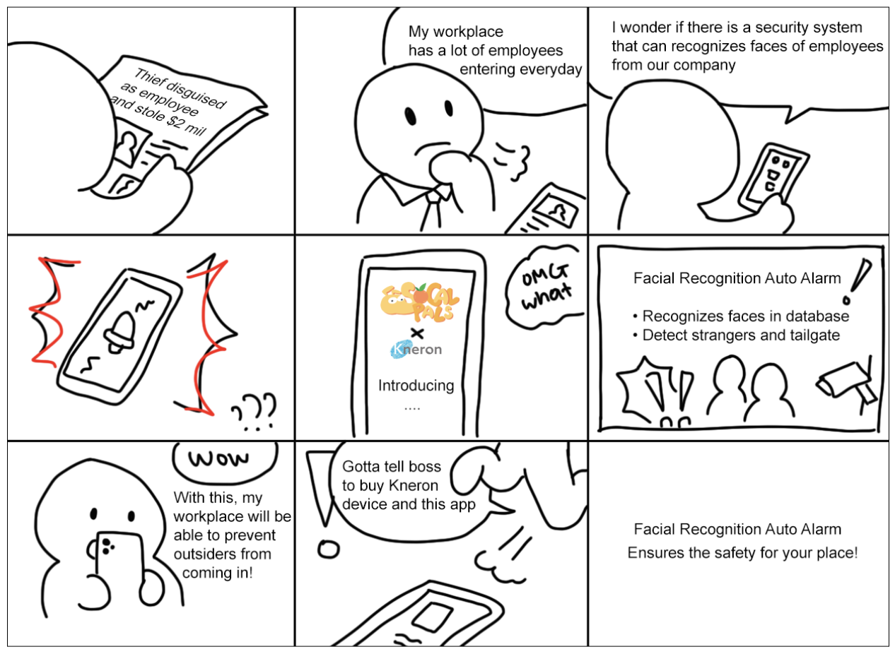

Kneron Auto Notify Tailgating (ANT)
Position
UI Designer | Frontend Developer
Team
Fernando Gomez Jr
Thu Diep
Tung Cuu Nguyen
Yoo Keoung Oh
Nathan Murashie
Period
December 2021 - June 2022
Overview
Security has always been a big concern in today’s society. The primary goal is to provide cost-saving AI software solutions to fulfill users’ needs regarding the concern of not only security, but also vehicles and other issues. In order to achieve this goal, we will focus on combining the features of Kneron’s previous products into one single solution, making it more efficient and cost-effective.
Statement of Work
Our overall quantitative goal is to develop a smartphone app using machine learning technology that will identify whether a person entering home has entry access and then either deny or grant entry. The application will be a byproduct of fusing their pre-existing tailgating and face recognition applications which will be integrated to a home assistant and control multiple devices.
Given Kneron’s APIs, app components, and data architecture, our team is to integrate their backend into an application for IOS and android. The frontend will be built from scratch to complement the integrated backend, and as long as it meets Kneron’s standard our team is given full jurisdiction over its development.
The Kneron backend will use their Kneron cloud, several of their APIs, and other provided applications. Kneron requests that the frontend will be developed primarily on android studio and the backend on linux.
Despite the quantitative goal, there is a qualitative focus. Kneron desires that this project serve as a keystone example to inspire future development of fused applications using their marketplace’s component apps.
persona
  Comparative Analysis
Our team conducted a comparative analysis research to orient the team to the competition and understand the market. Our goals for the research are to:
- Figure out at least 3 existing competitors from different categories
- Comprehend the trends of the security control system using AI technologies
- Identify current and potential uses of facial recognition technology in the world

storyboard
Generalized Transition Network

The diagram above describes all the states that our proposed system will have. Based upon the system’s main features and functions, the diagram is divided into 4 parts; Login, Manage Authorized Users, Log Check, and Activity Recognition and Update, respectively. Every part interacts with each other within the system, as described in the bridges between boxes. They could be in a certain relationship, for example, the login process is the prerequisite for the user authorization step.
The term “state” refers to a visual representation that depicts the interaction between the UI components based on user actions. The block boxes indicate the User Interfaces, such as the Login and Homepage, and the arrows connected to each UI show possible user scenarios and their following outcomes, especially for how the system reacts towards each user input type. The boxes with an “X” mark at the top left corner represent event handlers, in this case, either confirmation or warning, that prompts users’ certain attention or awareness in terms of error prevention and recovery.
Wireframes

Showcase